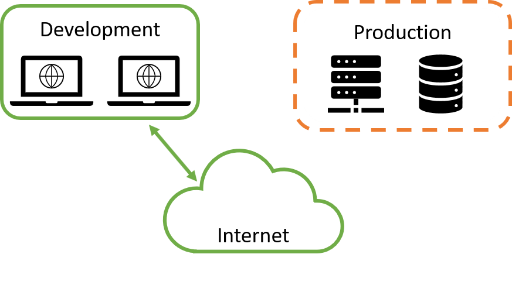

Porter: The Devil is in the Deployments

Carolyn Van Slyck
Overview
- What is Porter
- What problems it solves
- When bundles may help
- When they probably won't
What Problems Do Bundles Solve?
- Package deployments into a versioned distributable artifact
- Reduce complexity of deployments for the people running them
- Provide tools and workflows for secure, tamper-proof deployments
What is Porter?
Package your application, client tools, configuration, and deployment logic into an installer that you can distribute and run with a single command 🎩✨
Bundles contain everything they need to deploy
Example: Create and configure a new team cluster
- Create a cluster with kubeadm, aws, az, gcloud...
- Create a team secret store with vault, aws, aws, gcloud...
- Install Kubernetes Secrets Store CSI with helm
Bundles encapsulate the deployment logic
Example: Create and configure a new team cluster
- Clone a repository? The app's or a devops one?
- Set environment variables, and save config files to specific locations?
- Call multiple helm and terraform commands?
- Or a custom script?
- Or a utility docker container with a bunch of flags?
Every deployment is a snowflake ❄️
$ porter install staging-app --tag myorg/myapp:v1.17.1 --cred staging
- I only need the bundle tag
- I don't need to be familar with the app or tooling
- This is much less intimidating to learn 😅
Distributed via OCI Registries
- No new infra to support
- Easy to find
- Familiar 🐳
Bundle! Explain yourself
$ porter explain --tag myorg/myapp:v1.17.1
Name: myapp
Description: A really good application
Version: v1.17.1
Credentials:
Name Description Required
kubeconfig A kubeconfig with cluster admin true
No parameters defined
No outputs defined
Actions:
Name Description Modifies Installation Stateless
maintenance-mode Pauses the app and puts up a cute sign true false
Why companies like bundles
- Deploy across an airgap
- Repeatable deployments
- Supply chain security
- Metadata for analysis and enforcement
Bundles can jump an airgap

$ porter archive myapp.tgz --tag staging/myapp:v1.17.1
# physically move myapp.tgz across airgap
$ porter publish --archive myapp.tgz --tag production/myapp:v1.17.1
Bundles provide metadata
- Bundle Definition
- Name
- Version
- Parameters/Credentials
- Dependencies
- Outputs
- Bundle Execution
- What is installed
- Audit History
- Deployment durations, e.g. myapp takes 2 minutes to deploy
- Parameters used during the last deployment
Porter's declarative syntax that provides more metadata
- Mixins: terraform, helm, kubectl, exec...
- Commands, arguments and flags
- Parameters and credentials
Porter in the Wild
- Production
- Azure Marketplace / ARC
- Azure Trusted Research Environments
- Azure Service Operator
- F5
- Ernst and Young
- In Discussion
- Microsoft 365 Security
- Azure Customer Workload Validation
- Price Waterhouse Cooper
- HP Container Marketplace
Try it out @ getporter.org/quickstart
Thank you!